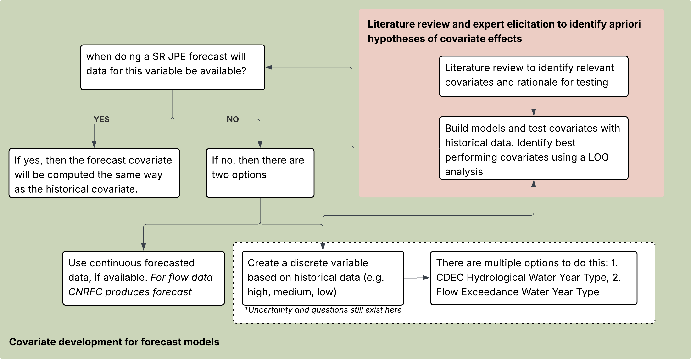

covariates_documentation.RmdThere are multiple covariates used in SR JPE modeling that were developed through separate but related processes. This vignette provides a comprehensive summary of:
The code that generates these covariates lives in
data-raw/process_data_scripts/build_covariates.R; this
vignette describes the covariates and considerations in the covariate
selection process.
The following table lists the covariates tested within the SRJPEmodels.
| Covariate | Type | Forecast | Stock-Recruit | Survival | PLAD | In Season | BTSPASX | NOTES | …10 | …11 |
|---|---|---|---|---|---|---|---|---|---|---|
| si_gdd_spawn | temperature | TRUE | Selected for Mill Creek | NA | NA | Confirm that we use NULL | Confirm that we use NULL | NA | NA | NA |
| si_above_13_temp_day | temperature | TRUE | tested | NA | NA | NA | NA | NA | NA | NA |
| si_above_13_temp_week | temperature | TRUE | Selected for Deer Creek and Yuba River | NA | NA | NA | NA | TODO this is from the manuscript, it differs from what is in For_Inputs.xlsx that is used in integrated model | NA | NA |
| si_weekly_max_temp_max | temperature | TRUE | tested | NA | NA | NA | NA | NA | NA | NA |
| si_weekly_max_temp_mean | temperature | TRUE | tested | NA | NA | NA | NA | NA | NA | NA |
| si_weekly_max_temp_median | temperature | TRUE | Selected for Clear Creek | NA | NA | NA | NA | NA | NA | NA |
| si_mean_flow | flow | TRUE | Selected for Battle Creek | NA | NA | NA | NA | NA | NA | NA |
| si_max_flow | flow | TRUE | tested | NA | NA | NA | NA | NA | NA | NA |
| si_min_flow | flow | TRUE | Selected for Butte Creek | NA | NA | NA | NA | NA | NA | NA |
| si_median_flow | flow | TRUE | tested | NA | NA | NA | NA | NA | NA | NA |
| rr_mean_flow | flow | FALSE | tested | NA | NA | NA | NA | NA | NA | NA |
| rr_max_flow | flow | FALSE | tested | Selected | NA | NA | NA | TODO which max flow is used in survival | NA | NA |
| rr_min_flow | flow | FALSE | tested | NA | NA | NA | NA | NA | NA | NA |
| rr_median_flow | flow | FALSE | tested | NA | NA | NA | NA | NA | NA | NA |
| 3-category water year type | water year summary | TRUE | tested | NA | NA | NA | NA | NA | NA | NA |
| 3-category flow exceedance year type | water year summary | TRUE | tested | NA | NA | NA | NA | NA | NA | NA |
| monthly reservoir storage Keswick | resevoir storage | TRUE | tested | NA | NA | NA | NA | NA | NA | NA |
| monthly reservoir storage Shasta | resevoir storage | TRUE | tested | NA | NA | NA | NA | NA | NA | NA |
| monthly peak flow | flow | TRUE | tested | NA | NA | NA | NA | NA | NA | NA |
| fork_length | physical | FALSE | tested | Selected | Use Fork Length, did not test environmental covariates | NA | NA | NA | NA | NA |
| mi_gdd_sacramento | temperature | TRUE | tested | NA | NA | NA | NA | NA | NA | NA |
| mi_above_13_temp_day | temperature | TRUE | tested | NA | NA | NA | NA | NA | NA | NA |
| mi_above_13_temp_week | temperature | TRUE | tested | NA | NA | NA | NA | NA | NA | NA |
| NA | NA | NA | NA | NA | NA | NA | NA | NA | NA | NA |
| NA | NA | NA | NA | NA | NA | NA | NA | NA | NA | NA |
Rows highlighted in green indicate covariates that are selected in at least one final model. “Tested” indicates the covariate was explored but not selected as the primary covariate. “—” indicates the covariate was not applicable to that model type.
Temperature covariates were developed for the spawning/incubation period (Aug–Dec in tributaries) and the adult migration period (Mar–May in the Sacramento River mainstem). All temperature data come from USGS, CDEC, and USFWS gages; gaps are filled with rolling 3-day means or monthly means.
| Variable Name | Type | Forecast | Definition |
|---|---|---|---|
| si_gdd_spawn | temperature | TRUE | Additive measure of temperatures during the adult upstream migration and spawning window. This window is defined as August-December. The steps involved in calculating this value include: obtain daily mean temperature values for each stream (if data are available at a finer resolution e.g. 15-min intervals then the daily mean is calculated), filter the dataset to Aug-Dec, add the daily mean values by stream and year. Missing values are filled in with either the rolling 3-day mean or if that is not available the monthly mean. |
| si_above_13_temp_day | temperature | TRUE | Day of the year when water temperature exceeds 13C representing thermal stress during spawning and incubation in tributaries. 13C is recognized as the upper limit of water temperature for spawning and incubation. The data are not filtered to the spawning time period as this threshold is typically met before August; though Jan and Feb are filtered out as adults are not yet in the tributaries. The steps involved in calculating this value include: obtain daily max temperature values for each stream, calculate the 7-day rolling mean of max values (any missing values are filled in the weekly mean of the 7DADM), find the min date when the 7DADM is greater than 13 |
| si_above_13_temp_week | temperature | TRUE | This is the same as si_above_13_temp_day except instead of a day of the year it is the week of the year. |
| si_weekly_max_temp_max | temperature | TRUE | Weekly max water temperature for tributaries and the mainstem Sacramento during the spawning and incubation time period. This window is defined as August-December. Note that daily max temperatures are not available for Sacramento so daily mean values are used. The steps involved in calculating this value include: obtain daily max temperature values for each stream, filter the dataset to Aug-Dec, calculate the weekly max value for each year and stream, calculate the max value across all weeks. |
| si_weekly_max_temp_mean | temperature | TRUE | This is the same as si_weekly_max_temp_max except when summarizing across all weeks the mean value is calculated |
| si_weekly_max_temp_median | temperature | TRUE | This is the same as si_weekly_max_temp_max except when summarizing across all weeks the median value is calculated |
| mi_gdd_sacramento | temperature | TRUE | Water temperature exposure during adult upstream migration in the mainstem Sacramento River (March–May), calculated by summing mean daily temperatures. |
| mi_above_13_temp_day | temperature | TRUE | Week of the year (1:52) when water temperature exceeds 13 °C during the adult upstream migration in the mainstem Sacramento (March–May). |
| mi_above_13_temp_week | temperature | TRUE | Day of the year (1:365) when water temperature exceeds 13 C during the adult upstream migration in the mainstem Sacramento (March–May). |
Flow covariates were developed for the spawning/incubation period (Aug–Dec) and the juvenile rearing period (Nov–Jul for tributaries; Jan–Jul for the Sacramento River). Daily maximum flows are used to capture peak flow conditions. All data come from USGS and CDEC gages.
| Variable Name | Type | Forecast | Definition |
|---|---|---|---|
| si_mean_flow | flow | TRUE | Mean flow during the spawning and incubation time window. This window is defined as August-December. The steps involved in calculating this value include: obtain daily max flow values for each stream, filter the dataset to Aug-Dec, find the mean flow by stream and year. |
| si_max_flow | flow | TRUE | This is the same as si_mean_flow except the max flow by stream and year is calculated. |
| si_min_flow | flow | TRUE | This is the same as si_mean_flow except the min flow by stream and year is calculated. |
| si_median_flow | flow | TRUE | This is the same as si_mean_flow except the median flow by stream and year is calculated. |
| rr_mean_flow | flow | FALSE | Mean flow during the rearing time period. This window is defined as November-July. The steps involved in calculating this value include: obtain daily max flow values, filter the dataset to Nov-July, find the mean flow by stream and year. |
| rr_max_flow | flow | FALSE | This is the same as rr_mean_flow except the max flow by stream and year is calculated. |
| rr_min_flow | flow | FALSE | This is the same as rr_mean_flow except the max flow by stream and year is calculated. |
| rr_median_flow | flow | FALSE | This is the same as rr_mean_flow except the max flow by stream and year is calculated. |
| monthly peak flow | flow | TRUE | Calculate the peak flow for each watershed and month. This would be different based on JPE date |
| Variable Name | Type | Forecast | Definition |
|---|---|---|---|
| 3-category water year type | water year summary | TRUE | Use water year type from CDEC for the Sacramento Valley and aggregate into 3 categories: C, D/BN/AN, W. This is a scenario based covariate meaning we do not need any data for the forecast. All 3 categories would be run for the forecast. |
| 3-category flow exceedance year type | water year summary | TRUE | Use the flow exceedance methodology provided by the CDFW Instream Flow team (find mean annual flow by water year for each stream and rank the water years where the top 33% are wet, middle are average, bottom are dry) to categorize years for each stream into 3 categories: wet, average, dry |
Reservoir storage in Shasta and Keswick Reservoirs integrates upstream water management and provides an early-season indicator of downstream flow conditions. These data are particularly useful for forecasting because they are reported in real time.
| Variable Name | Type | Forecast | Definition |
|---|---|---|---|
| monthly reservoir storage Keswick | resevoir storage | TRUE | Using reservoir storage data, calculate the monthly max storage for Keswick. For each JPE date we would use data from the month prior (e.g for Jan 1 it would be average for Dec) |
| monthly reservoir storage Shasta | resevoir storage | TRUE | Using reservoir storage data, calculate the monthly max storage for Shasta. For each JPE date we would use data from the month prior (e.g for Jan 1 it would be average for Dec) |
Covariate selection began with a literature review and input from the SR JPE Modeling Advisory Team (MAT). The goal was to identify environmental drivers expected to influence spring run Chinook salmon survival, growth, and reproductive success based on known biological mechanisms. The candidate covariate list and supporting literature can be found in the FlowWest covariate planning spreadsheet.
Key ecological relationships motivating covariate selection:
Candidate covariates were tested within —–TODO confirm which models actually use LOO — each model using leave-one-out (LOO) cross-validation. LOO analysis holds out one brood year at a time and evaluates how well the model predicts that year using the remaining data. This approach was used to:
A key design decision in the SR JPE model system is whether to use covariates derived from historical observations or adapted for forecast and scenario applications. Many of the strongest-performing covariates in historical stock-recruit modeling — such as rearing-period maximum flow (Nov–Jul) — are not available at the time of forecasting because the rearing season has not yet concluded. An annual JPE forecast must be produced early in the calendar year (e.g., January), before the rearing season ends in July.The diagram outlines the process for developing proposed covariates for forecast and scenario models.
As we transition to forecast and scenario model application, we need to find out if the data for a given covariate will be available at the time of forecasting. If yes, the covariate will be included in the forecast model using the same structure as the historical covariate. If the answer is no, meaning the covariate data will not be available during the forecaste period, then two strategies are considered:
Use continuous forecast data, if available
Create a discrete covariate based on historical data: restructure and bin the variable into categories based on historical conditions (e.g. high, medium, low)

The SR JPE is intended to provide an operational forecast of annual spring run Chinook juvenile production before the outmigration season is complete. The modeling team therefore favors covariates that: